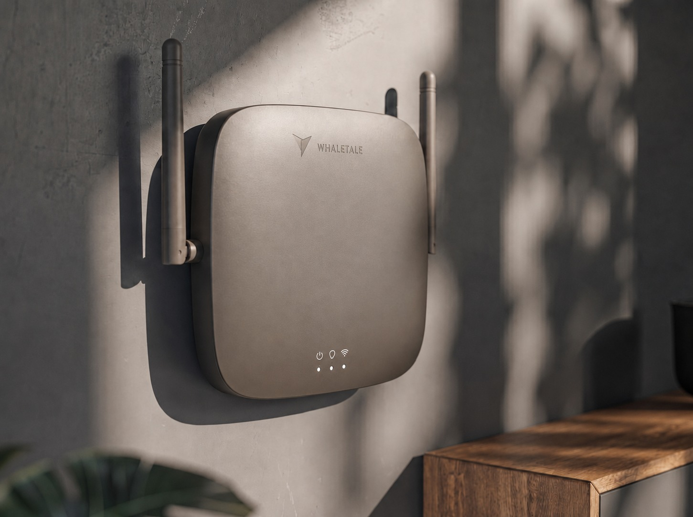

01
GuestRadar · visitor analytics

Counts how many people come into a space by sensing nearby Wi-Fi, with no app and no sign-up. It tracks how long people stay and where they move, and shows it all in real time.
- Unique visitors, and how many come back
- Time spent inside, and how busy it is by hour and day
- Heatmaps of where people go, and a way to compare locations
- An online dashboard with the reports
It gives a business real numbers to work from: where to place ads, how to lay out a floor, and whether a campaign actually brought people in.
02
ANPR / LPR · plate recognition and access
Reads car number plates and controls the gate. It recognises a plate, opens the barrier on its own, keeps a log of every entry, handles white and black lists, and can connect to security systems that are already in place.
03
Websites
Sites in several languages that work well on a phone, built and put online. The most recent one is a website for the restaurant Crunch Burger.
See it live